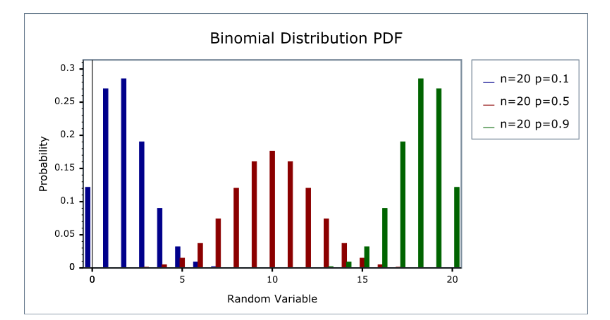
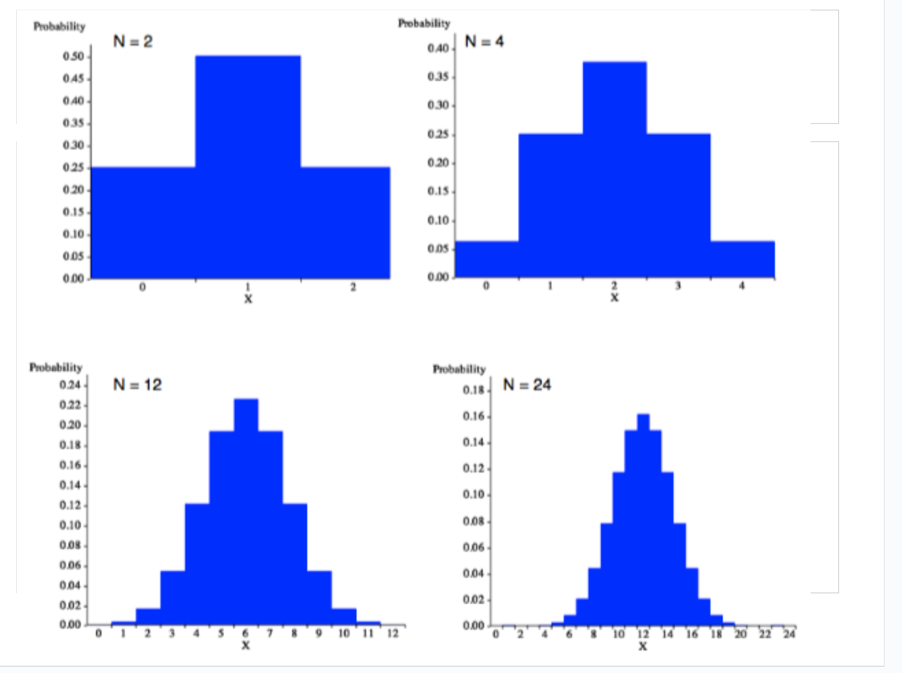
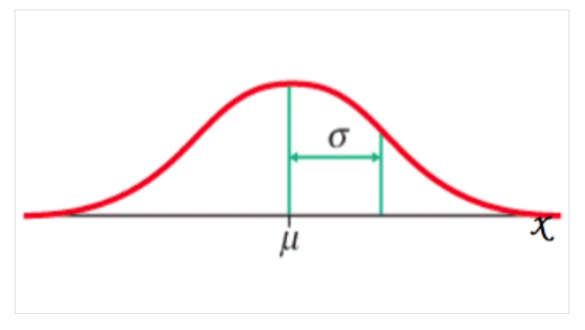

pbinom(65, size = 100, prob = 0.5)[1] 0.999105Sociology 106: Quantitative Sociological Methods
[[ADD IT IN LATER]]
Discrete distributions:
Continuous distributions:
A binary probability distribution describes the randomness of a single yes/no outcome using one parameter, \(π\); summing many such binary outcomes produces a binomial distribution, which in turn approaches a normal distribution as the number of trials grows large.
Inferential statistics assume that the numerical values which a variable takes are the result of some random phenomenon
A random variable is:
a numerical measurement whose value is not known in advance because it depends on randomness
A random variable is a numerical measurement of a random phenomenon
Notation:
Example: Rolling a die
{1, 2, 3, 4, 5, 6}A probability distribution answers:
If I repeated this random process many times, how often would I see each possible value?
Remember: Probability models consist of:
Example: For rolling a six-sided die: the probability distribution of the random variable \(X\) is defined by: \[P(X = x) = \frac{1}{6} \text{ for x} \in S: \{1, 2, 3, 4, 5, 6\}\]
which fully describes the randomness of the die.
In some cases, we can describe a probability distribution by listing all possible values a random variable can have, as well as the probabilities associated with each value
However, just as we described a sample distribution in terms of summary statistics, we can also describe a probability distribution in terms of parameters
Let’s strip things down to the simplest possible random variable:
Perhaps the most basic family of discrete probability distributions is the binary (or Bernoulli) distribution, which models whether an outcome occurs or not in one trial
A binary random variable \(X\) is equal to:
\[X \in \{0, 1\}\]
Interpretation:
Examples:
This is why these are also called indicator variables.
The probability distribution of a binary random variable:
\[P(X = 1) = \pi\] \[P(X = 0) = 1 - \pi\]
In plain language: There are only two possible outcomes, so we only need one number to describe the entire distribution.
\[π= \text{probability the event occurs}\]
if \(P(X = 1) = \pi\), then automatically \(P(X = 0) = 1 - \pi\) since probabilities sum to 1
This is powerful because this single parameter \(\pi\):
Different values of \(\pi\) → different worlds.
Key insight: Parameters are why we can refer to a family of binary probability distributions that share the same structure but can vary through having different parameter values
So why does \(\pi\) matter?
For binary \(X\):
\[\mu = 0 \cdot P(X=0) + 1 \cdot P(X=1) = \pi\]
This is a HUGE result: For a binary variable, the mean equals the probability of success.
This is why:
Key insight: This connects probability directly to statistics.
Recall that variance
measures how much randomness there is
We calculate the variance by:
For a binary variable:
\[\text{Var}(X) = \pi(1-\pi)\]
Key intuition:
So:
For random variables, we calculate the variance similarly, except we weight each value’s squared deviation from the mean by the probability of that value occurring, instead of standardizing over the number of values
Formulas:
\[\text{Var}(X) = \sum P(X = x) \times (x - \mu)^2\]
\[\sigma(X) = \sqrt{\text{Var}(X)}\]
Example: Binary random variable X
\[\text{Var}(X) = P(X = 0) \times (0-\pi)^2 + P(X = 1) \times (1-\pi)^2\]
\[\text{Var}(X) = (1-\pi) \times \pi^2 + \pi \times (1-\pi)^2\]
\[\text{Var}(X) = (1-\pi) \times \pi \times (\pi + 1 - \pi)\]
\[\text{Var}(X) = (1-\pi) \times \pi\]
\[\rightarrow \sigma(X) = \sqrt{(1-\pi) \times \pi}\]
So, for a binary random variable X, where \(P(X = 1) = \pi\) and \(P(X = 0) = 1 - \pi\), we can calculate both:
Both are functions of the parameter \(\pi\)
Notation: We may write \(X \sim \text{Binary}(\pi)\) (or \(X \sim \text{Bernoulli}(\pi)\)), which can be read as:
“X is a random variable with a Binary (Bernoulli) probability distribution and mean \(\pi\)”
We can graph the probability density function, which shows \(P(X = x)\) across the sample space:

The binomial probability distribution measures the distribution of the sum of n binary random variables, all with probability \(\pi\)
Alternatively: The distribution of n independent trials where ‘success’ occurs with probability \(\pi\)
Notation: If Y is a binomial random variable, we write \(Y \sim B(n, \pi)\)
Question: What are the possible values of Y?
The binomial probability distribution measures the distribution of the sum of n binary random variables, all with probability \(\pi\)
Alternatively: The distribution of n independent trials where ‘success’ occurs with probability \(\pi\)
Notation: If Y is a binomial random variable, we write \(Y \sim B(n, \pi)\)
Answer: Y can equal any whole number between:
What are the probabilities of each value of Y?
We can construct a general formula for \(P(Y = k)\):
Step 1: Consider one sequence of n trials with k successes
Step 2: Account for all possible sequences
Thus, we have:
\[P(Y = k) = \binom{n}{k} \times \pi^k \times (1-\pi)^{n-k}\]
where \(\binom{n}{k} = \frac{n!}{k!(n-k)!}\)
Example: I shoot 5 three-pointers and I have a 30% chance of making each one. What is the probability I make exactly 2 three-pointers?
\(Y \sim B(5, 0.3)\) (n = 5 trials with \(\pi = 0.3\))
\[P(Y = 2) = \binom{5}{2} \times 0.3^2 \times (1-0.3)^{5-2}\]
\[= \frac{5!}{2! \times 3!} \times 0.3^2 \times 0.7^3\]
\[= \frac{1 \times 2 \times 3 \times 4 \times 5}{(1 \times 2) \times (1 \times 2 \times 3)} \times 0.3^2 \times 0.7^3\]
\[= 0.3087\]
In R: dbinom(2, size = 5, prob = 0.3)
We can do more math (not shown) to find that, for \(Y \sim B(n, \pi)\):
Mean:
\[\mu = \pi \times n\]
The mean is equal to the probability of one trial succeeding, times the total number of trials
Standard deviation:
\[\sigma = \sqrt{\pi \times n \times (1-\pi)}\]
The probability density function (pdf) of a binomial random variable shifts with \(\pi\)…

We can also answer questions like:
“After n free throws made with probability π, what is the probability that I have made less than k free throws?”
In notation: If \(Y \sim B(n, \pi)\), what is \(P(Y \leq k)\)?
The challenge: Centuries ago, if n and k were large, this would have been really difficult to answer!
Example: Say \(Y \sim B(100, 0.5)\), and we want to know \(P(Y \leq 65)\)
This would require summing: \(P(Y = 0) + P(Y = 1) + ... + P(Y = 65)\)
Today, in R:
pbinom(65, size = 100, prob = 0.5)[1] 0.999105The key takeaway if that as \(n\) gets larger, the probability distribution function of a binomial random variable approaches a smooth curve:

The important statistical leap: What if I repeat this binary process many times?
Let:
Then:
\[Y \sim \text{Binomial}(n, \pi)\]
Interpretation:
This is literally just: adding up 0s and 1s
As n gets larger, the probability distribution function of a binomial random variable approaches a smooth curve:
(According to our textbook): The search for ways to approximate the binomial distribution at large values of \(n\) led to the discovery of normal distributions
Normal distributions are a family of continuous probability distributions that are able to closely model the distribution of many natural phenomena
As \(n\) gets large:
This is an early encounter with the Central Limit Theorem:
Sums of many small random variables tend to look Normal.
So historically:
One-sentence summary:
A binary probability distribution describes the randomness of a single yes/no outcome using one parameter, \(\pi\); summing many such binary outcomes produces a binomial distribution, which in turn approaches a normal distribution as the number of trials grows large.
This connects:
Normal distributions are defined by parameters for the mean (\(\mu\)) and the standard deviation (\(\sigma\))
The formula for the probability density function is:
\[f(x) = \frac{1}{\sigma\sqrt{2\pi}} e^{-\frac{1}{2}\left(\frac{x-\mu}{\sigma}\right)^2}\]
where:
Notation: We write \(X \sim N(\mu, \sigma)\)
That is, X is a normally distributed random variable with mean \(\mu\) and standard deviation \(\sigma\)

Key properties:
The normal distribution is symmetric around its mean
The mean, median, and mode of the normal distribution are the same
The percentiles of the distribution of a given random variable \(X \sim N(\mu, \sigma)\) are known, such that:

Shows the percentage of data within 1, 2, and 3 standard deviations
Because all normal distributions share the same properties, we can standardize any normal distribution \(N(\mu, \sigma)\) into the standard normal distribution, \(N(0, 1)\)
How to standardize:
We do so by:
\[Z = \frac{X - \mu}{\sigma}\]
For any given value of x in \(X \sim N(\mu, \sigma)\), we can calculate the z-score, which is the number of standard deviations that a value x is away from \(\mu\)
Formula:
\[z = \frac{x - \mu}{\sigma}\]
Interpretation:
Question: How do we assign probabilities to outcomes in an infinite sample space when we think the probability distribution is normal?
Answer: We compute probabilities for intervals under the normal density curve:

In R: If \(X \sim N(\mu, \sigma)\), we can:
Calculate \(P(X \leq x)\) as:
pnorm(x, mean = μ, sd = σ)Calculate the area under the normal density curve of X in the interval \([x_1, x_2]\) as:
\[P(X \leq x_2) - P(X \leq x_1) = P(x_1 \leq X \leq x_2)\]
In R:
pnorm(x2, μ, σ) - pnorm(x1, μ, σ)We can also calculate what the value is at a given percentile q of X as:
qnorm(q, mean = μ, sd = σ)Note: q should be entered in decimal form (i.e., between 0 and 1, not between 0 and 100)
Example: To find the 95th percentile:
qnorm(0.95, mean = μ, sd = σ)Due: Thursday, March 5 by 11:59 PM
Format: Similar to last week’s weekly assignment: mostly a problem set
Important: You will use a little bit of R, so please submit your assignment (and your code!) on bCourses
Rest of class: Work on HW in groups
Groups: